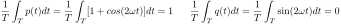
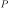
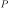

Next: Load/Source Matching for Maximum Up: Chapter 3: AC Circuit Previous: Radio/TV Broadcasting and the
All loads of a power plant can be modeled by a two-terminal network of passive elements (resistors, inductors, capacitors, without any energy sources) with a total complex impedance
| (376) |
 ) and
storage (in
) and
storage (in  ) in the load. Let the input voltage to the load network
be:
) in the load. Let the input voltage to the load network
be:
 |
(377) |
| (378) |
Consider the instantaneous power of the load defined as the product
of the voltage and current:
 |
 |
||
|
![$\displaystyle 2V_{rms}I_{rms}\;\cos(\omega t)\;[\cos(\omega t)\cos\phi
+\sin(\omega t)\sin\phi ]$](img1017.svg) |
||
|
|||
|
|||
|
![$\displaystyle S \;\left[\cos\phi\; p(t) + \sin\phi\; q(t) \right]
=P\; p(t)+Q\; q(t)$](img1020.svg) |
(379) |

 |
(380) |
|  | (381) |
The plots below show that the instantaneous power can be
represented as either a product of  and
and  , or a weighted
sum of the real power and reactive power .
, or a weighted
sum of the real power and reactive power .
Consider the average power over one period
 :
:
|
|||
|
|||
|
(382) |
 ;
;
The apparent power
can be considered as the magnitude of
a complex product of
and
:
| (383) |
| (384) |
 |
(385) |
of the load, while the reactive power
is stored
in and released from the reactive component of the load.
Improvement of Power Factor
The Power factor is defined as
| (386) |
 by reducing ,
for higher efficiency of the power transmission system, i.e., to deliver
the real power  to the load with minimum reactive power
by reducing ,
for higher efficiency of the power transmission system, i.e., to deliver
the real power  to the load with minimum reactive power  (thereby
minimum current and power dissipation along the transmission line).
(thereby
minimum current and power dissipation along the transmission line).
To do so, we can include a
shunt capacitor
 to cancel the inductive effect in the system, thereby reducing
and increasing .
to cancel the inductive effect in the system, thereby reducing
and increasing .
The most straight forward way is to add the shunt capacitor
 in series with the inductive load, so that the
inductive reactance is completely canceled by the
capacitive reactance
.
in series with the inductive load, so that the
inductive reactance is completely canceled by the
capacitive reactance
.
However, we also note that at resonance, the voltages across and
are times the voltage across , which is the same as the
source voltage (see this page):
| (387) |
 (without capacitor ) if is large. Consequently, improper
operation of the load or even damage may result.
(without capacitor ) if is large. Consequently, improper
operation of the load or even damage may result.
The right way to compensate for the inductive impedance of the circuit
is to include the shunt capacitor in parallel to the inductive load
so that it still gets the expected voltage.
Now the overall load becomes
|
|||
|
(388) |
so that the new phase angle
is zero, i.e., the phases of the numerator
and denominator need are the same:
 i.e.i.e. i.e.i.e. |
(389) |
we get:
| (390) |
To reduce the cost of a large capacitance needed for the phase angle of the load to be reduced to zero so that , it is acceptable for the improved power factor to be less than 1, e.g., 0.95. In this case, the phase angle of the load is
| (391) |
we get the required capacitance. As now we have
| (392) |
| (393) |
| (394) |